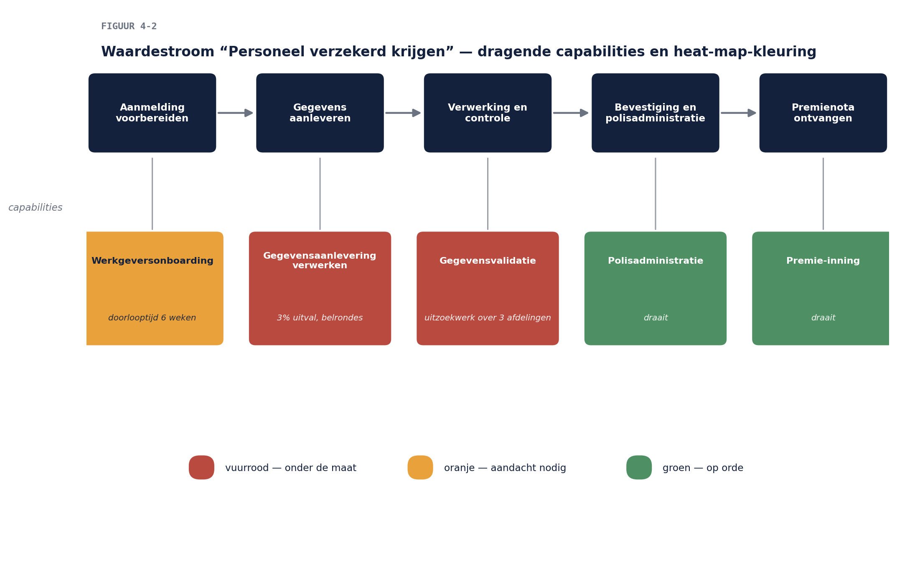

Business & Enterprise Architectuur — Niveau 1
Deel 4 · Slidedeck — Fase B: businessarchitectuur
(Platte markdown; één kop per slide, sprekersnotities cursief. Figuren als placeholder — opmaak volgt in de buildfase.)
Slide 1 — Deel 4 · Fase B
Businessarchitectuur: capabilities, waardestromen en het begrippenkader
Slide 2 — Opdracht 0 (10 min, tweetallen)
Peer feedback visie-hoofdstuk 1 — werkboek p. 1
- “Herkent élke stakeholder uit de top-3 zijn concern?”
- Extra check: meetlat bij elk doel?
Slide 3 — Vandaag lossen we op
B7 — de businesskant. “Werkgever” betekende drie dingen.
- Spoiler: dat was geen slordigheid.
- De datakant (bronnen, structuur, eigenaarschap) → deel 5
Slide 4 — De vraag onder de vraag
De COO in het MT:
“Als werkgevers straks alles digitaal aanleveren — wélk werk verdwijnt er dan, en welk werk komt erbij?”
Op de flap schrijven. Blijft hangen tot het eind.
Slide 5 — Dat is een fase B-vraag
Niet “welk systeem”, niet “welke gegevens”, maar: hoe levert Meridiaan waarde — en wat verandert daaraan?
- Wie dit overslaat, bouwt een portaal voor het werk van gisteren
Slide 6 — Vandaag
- Capabilities: het stabiele skelet
- Vijf begrippen die door elkaar lopen
- Waardestromen
- Het begrippenkader — B7 ontknoopt
- Baseline, target en de COO-vraag
Slide 7 — Capability
Iets wat de organisatie kan — los van wie het doet, hoe het gebeurt, welk systeem erbij gebruikt wordt
- Premie-inning · Werkgeversgegevensbeheer · Deelnemercommunicatie
Slide 8 — Waarom die abstractie?
| Beschrijving via… | houdbaar tot… |
|---|---|
| systemen | de vervanging |
| afdelingen | de reorganisatie |
| processen | het verbetertraject |
| capabilities | decennia |
De kapstok blijft staan als alles eraan verandert.
Slide 9 — De capability map
- Richtinggevend · Kern · Ondersteunend — drie niveaus diep
- Tekenregel 1: vermogens-taal, geen procesnamen
- Tekenregel 2: één capability op één plek
“Gegevenscontrole op drie plekken? Ken je die situatie ergens van?”
Slide 10 — Heat mapping: de kaart gaat werken
- Baseline: rood/oranje/groen naar prestatie
- Target: dezelfde kaart, andere kleuren
- De verschuiving ís de investeringsagenda
- De kaart verandert niet — de kleuren wel
Slide 11 — Opdracht 1 (15 min, individueel)
Vijf begrippen uit elkaar — acht formuleringen, werkboek p. 1
Slide 12 — Opdracht 2 (35 min, drietallen)
De capability map werkgeversdomein + heat map — werkboek p. 1
- Elke kleur gemotiveerd met een casusfeit
Slide 13 — Vijf begrippen
capability (wat kunnen we) · proces (hoe, in volgorde) · functie (welk werk clusteren we) · business service (wat bieden we aan, met welke afspraak) · afdeling (wie is er van)
Slide 14 — “Een portaal”
…bleek een business service: digitaal aanleveren met directe terugkoppeling
- Nieuwe capabilities nodig? Waarschijnlijk niet
- Nieuwe processen? Zeker
- Andere organisatie? → de COO-vraag Drie analyses, verstopt in één woord.
Slide 15 — Waardestroom
Waardelevering aan een afnemer, in fasen, van trigger tot waarde
- “Personeel verzekerd krijgen”: voorbereiden → aanleveren → verwerken & controleren → bevestigen → nota

Slide 16 — Waardestroom ≠ proces
- Waardestroom: van búiten naar binnen, tussenwaarde per fase
- Proces: van binnen naar binnen, handelingen in volgorde
- Proces-diepgang → de BPMN-cursus; hier: architectuurniveau
Slide 17 — Opdracht 3 (30 min, drietallen)
Waardestroom × capability — de matrix, werkboek p. 2
- Waar concentreert de Van Dijk-pijn zich?
- Klopt de matrix met jullie heat map?
Slide 18 — B7 ontknoopt: drie redelijke mensen
- Werkgeversdiensten: de contractpartij (De Boer = 1 klant)
- Premie-administratie: de aanlevereenheid (De Boer = 4)
- Deelnemersadministratie: de dienstverbandcontext (Zuid, ook na de fusie)
Alle drie hebben gelijk. Dát was het probleem.
Slide 19 — De fout was niet dat er drie betekenissen waren
De fout was dat niemand ze naast elkaar had gelegd.
Slide 20 — Het begrippenkader
Per kernbegrip: definitie · varianten mét bestaansrecht · relaties
- “Een contractpartij heeft één of meer aanlevereenheden”
- “Een dienstverband verwijst naar een aanlevereenheid op een peildatum”
Slide 21 — Niet: één definitie wint
Wel: één stelsel waarin de varianten expliciet en verbonden zijn
- Eerst betekenis (fase B), dan structuur (fase C — deel 5)
Slide 22 — Opdracht 4 (35 min, viertallen)
“Werkgever” gefileerd — werkboek p. 2
- Incl. de casus Bakkerij De Boer en het rollenspel (10 min)
Slide 23 — De Boer-toets
- Hoeveel klanten? · Hoeveel aanlevereenheden in 2022 / nu?
- Waar hoort het dienstverband van mevrouw Jansen — toen en nu?
Het peildatum-antwoord scheidt begrijpen van napraten.
Slide 24 — Waarom niet gewoon één definitie kiezen?
- De “verliezende” afdelingen bouwen schaduwadministraties
- Impliciet, ongedocumenteerd, onvindbaar — de B7 van over vijf jaar
- Expliciet-en-verbonden verslaat uniform-en-omzeild
Slide 25 — Baseline → target → gap
- Baseline: kaart + kleuren, waardestroom + pijnfasen, begrippenkader, organisatie
- Target: zelfde kaart anders gekleurd; validatie bij de bron; het stelsel geldend
Slide 26 — De COO-vraag beantwoord
- Verdwijnt: herstelwerk achteraf (belrondes, uitzoekwerk, correcties over drie afdelingen)
- Komt erbij: beheer aan de voorkant (validatieregels, aanleveraarondersteuning, kaderbewaking) + uitzonderingsbehandeling
- Ander werk voor wie blijft → de OR moet als eerste aan tafel
De stakeholderkaart van deel 3 keert terug.
Slide 27 — Fase B en BIZBOK
- De technieken zijn BIZBOK · de veranderfocus is TOGAF
- TOGAF: beschrijven voor de opgave · BIZBOK: de blijvende beschrijving
- BA-profiel? → deel 12 en 25, Open CA-specialisatie Business Architect
Slide 28 — Huiswerk
Opdracht 5: visie-hoofdstuk 2 (max. 2 A4) — mét expliciet antwoord op de COO-vraag
- Feedbackvraag deel 5: “kan de COO hiermee het OR-gesprek in?”
Slide 29 — Volgende keer
Deel 5: fase C-data — het begrippenkader wordt datastructuur
- Bronregistraties, eigenaarschap — en de definitieve oplossing van B7
- Neem de begrippenkader-tabel van vandaag mee